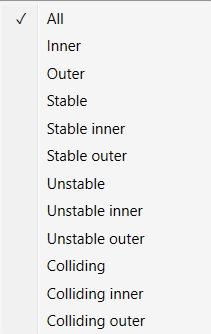
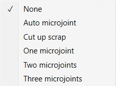

Finishing Rules
Finishing rules define all processes done automatically after nesting. They have many utilities, including preventing collisions, restoring balance to tilting parts, and making optimal use of the entire surface of a worksheet. The user can add, remove or modify rules. The order of rules in this list is important; while auto tooling. When TecZone Laser Cut finishes generating tooling for a contour, it checks this contour against each rule in this list, starting at the first rule. If the shape matches any rule, the corresponding action is applied; the software does not process any further rules for this contour. The checkbox at the beginning of each row can be used to temporarily disable any rule without having to delete it.
| These finishing rules are applied at the time of auto tooling a part. |
Hence, any change made here will take effect only when you recompute tooling. These settings have no effect whatever at the layout level.
To add a rule, you have to choose three parameters:
Contour: The type of contour Inner vs Outer. Stable-on-slats vs Unstable-on-slats Colliding or not. The available options for selecting a contour are discussed in more detail in a table following this list.
Size: The maximum limiting size of contours for which this rule applies. You can either type in the size in the form of width x height or type in just one number if both width and height have the same value.
Action: The action to perform micro-joint, scrap cut etc. The complete list of available actions is discussed later in this document.
Finishing rules define all processes done automatically after nesting and have many benefits,including collision prevention, restoration to balance potential tilting of parts, and making optimal use of an entire worksheet surface.
When auto-tooling, the order of rules in this list is important. When TecZone Laser generates tooling for a contour, it checks this contour against each rule in the list, starting from the first rule. If the shape matches any rule, the corresponding action is applied; the software does not process any further rules for this contour. The checkbox at the beginning of each row can be used to temporarily disable any rule without having to delete it.
| These finishing rules are applied at the time of auto tooling a part. Hence, any change made here will take effect only when you recompute the tooling. These settings have no effect whatsoever at the layout level. |

-
Contours are selected based on the below filters:
-
All - Contours are not filtered based on contour type if 'All' is the selected option for contour type.
-
Inner - All inner contours of a part are eligible for applying this rule.
-
Outer - All outer contours of a part are eligible for applying this rule.
-
Stable - All contours (inner as well as outer) that will remain stable on slats are eligible.
-
Stable Inner - All inner contours will remain stable on slats.
-
Stable Outer - All outer contours will remain stable on slats.
-
Unstable - All contours (inner as well as outer) that will either tip or fall through the slats are eligible.
-
Unstable Inner - All inner contours that are unstable on slats.
-
Unstable Outer - All outer contours that are unstable on slats.
-
Colliding - All unstable contours that are too close to the other contours of the part. If this contour were cut first, an adjacent contour could not be cut without the risk of head collision with tipping contour.
-
Contours that are stable on slats are never considered to be colliding.
-
If an inner contour is too close to another inner contour, both unstable, then both will be marked as colliding.
-
If an inner contour is too close to an outer contour, only the inner contour will be marked as colliding. It is unnecessary to mark the outer contour as colliding as it will almost always be cut after the inner contour.
-
The new parameter Allowance when routing around tipping holes is used to decide if two contours are too close.
-
-
Colliding Inner - All inner contours that are colliding.
-
Colliding Outer - All outer contours that are colliding.
-
-
Size - The maximum limiting size of contours for which this rule applies. You can either type in the size in the form of "width x height" or type in just one number if both width and height have the same value.
-
Action 
| Action | Description |
|---|---|
None |
No special action is taken. |
Auto microjoint |
Applies micro-joint(s) on the contourSoftware will automatically decide how many micro-joints are required based on the parameter Maximum allowed dip into slats. |
Cut up scrap |
Cut larger cut outs. |
One microjoint |
Create exactly one microjoint on the contour. |
Two microjoints |
Create exactly two microjoints on the contour. |
Three microjoints |
Create exactly three microjoints on the contour. |
Modifying the Finishing Rules (For Single Part)
Recompute → Tooling: Drop existing tooling.
On the bottom of the screen will appear a notification that confirms the done operation(s).
Modifying the Finishing Rules (For Multi Parts)
Finishing rules to prevent tilting parts
TecZone Laser recognizes by doing precise calculations that some parts could tilt on the layout sheet. This is why setting up the sheet details like loading tolerance are extremely important. TecZone Laser Cut will mark with red color the contours considered unstable, so you’ll be able to adjust the finishing rules in order to avoid possible accidents while laser cutting.
-
Click on the CAM Settings (finishing rules) so that you can access the controls.
-
Press the sign and to add the first rule i.e., for the unstable inner contour, we would like to have the ''cut up scrap'' as action applied. Whereas the ''Size'' parameter also needs to be filled.
| Measurements must be given either in millimetres or inches. |
Select Specific Parts (> 50mm < 100mm)
Let’s say we want to select all parts that are larger than 50 mm and smaller than 100 mm. Because there are several ways to understand the given problem, we propose three different options in terms of the type of contour chosen that solves the problem.
| The size parameter is always less than or equal to the user’s given value. |
The Whole Part Selection together with similar parts (Outer Contour).
With that in mind, we have to set this through three finishing rules that keeps in focus the outer contour. First of all, we have to define a piece size limit of 9999 millimeters (a limit rarely reached in our examples). The second rule has to cover the parts with a maximum length of 100 mm. We do so by setting the parameter "Size" as 100x100. Therefore, remains to select the parts smaller than 50 millimetres and that means exactly "50 x 50" for the size parameter. Always remember that "n" millimeters must be given in a "width x height" format. The image below shows how the finishing rules table should look like.